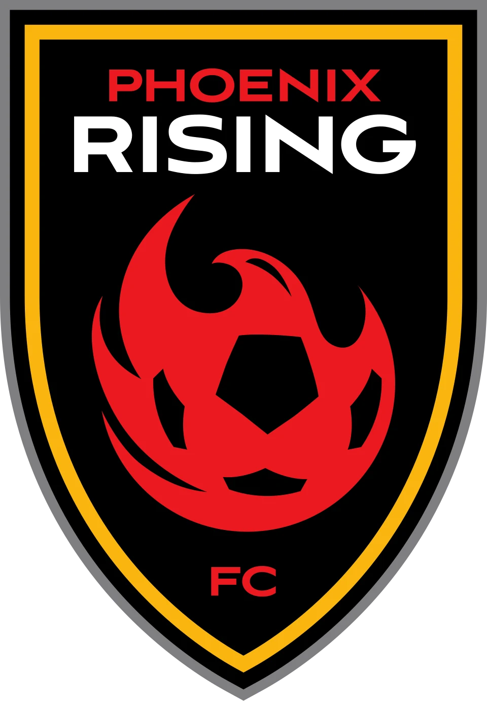
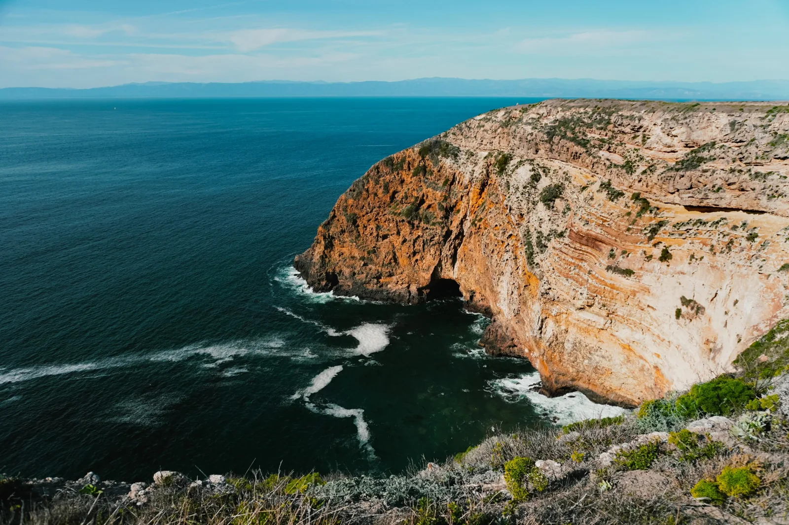
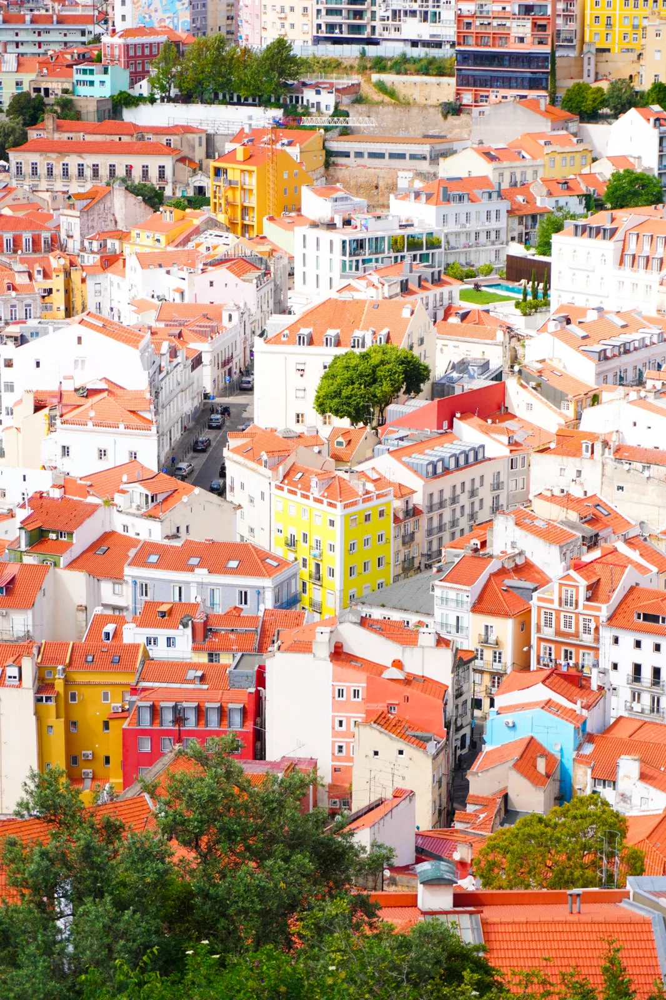
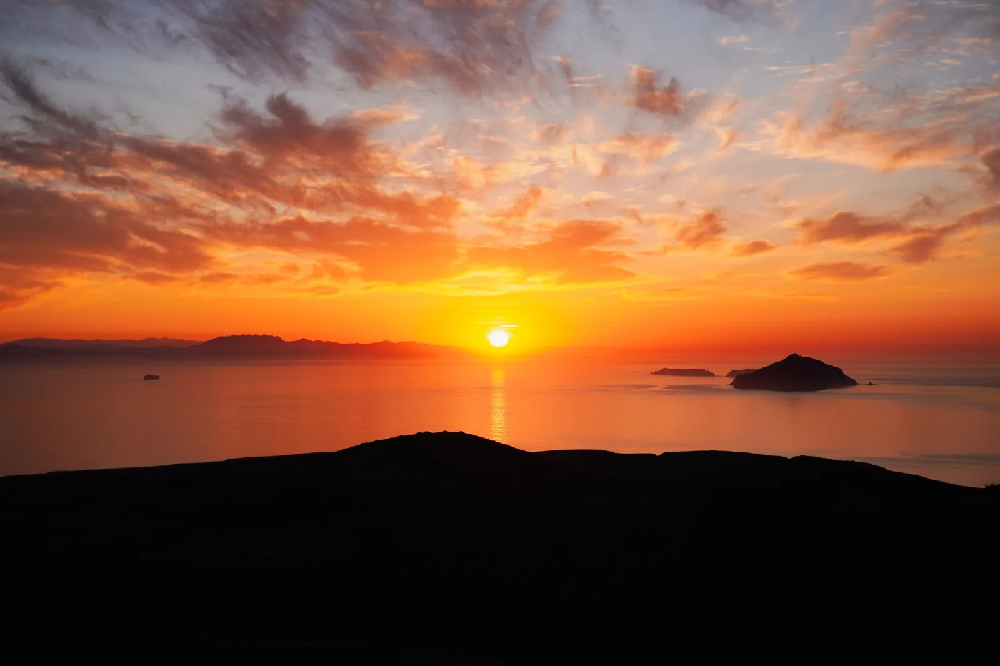
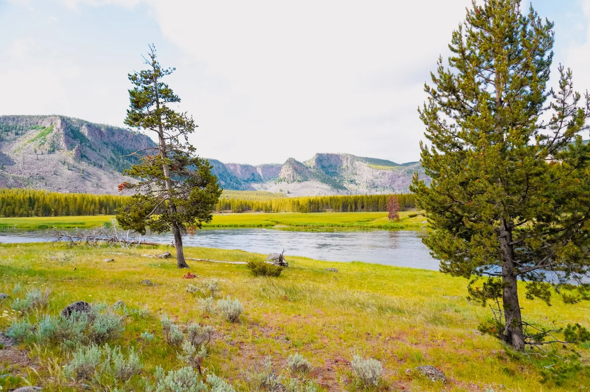
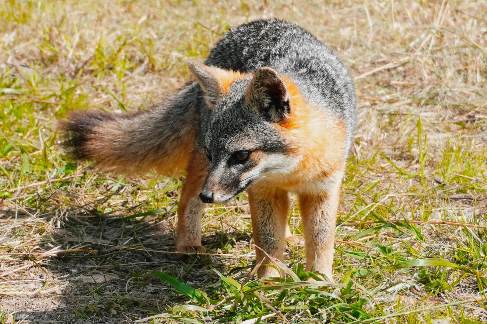
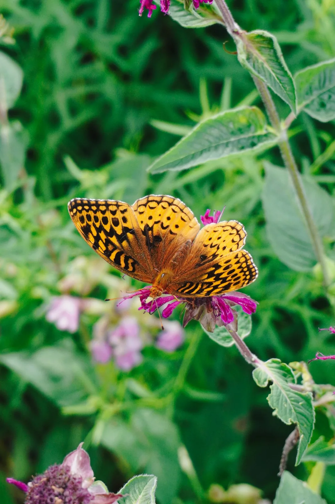
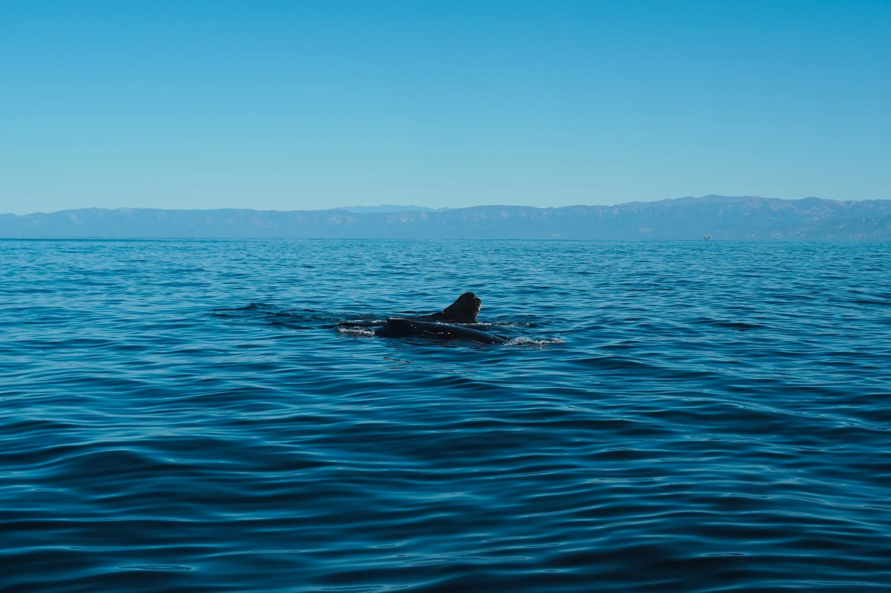
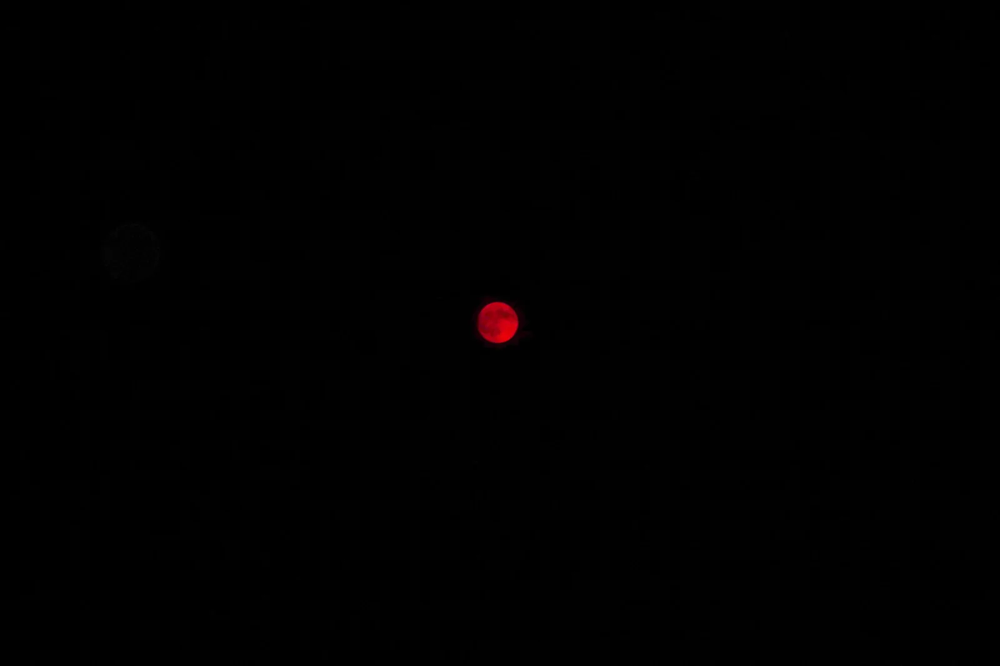

Visit Phoenix
Event photography · Performance & cultural storytelling


Photography by Jamie Goralski. Select any image to view it larger.
Phoenix Rising FC
Sports photography · Match action & fan experience



Photography by Jamie Goralski. Select any image to view it larger.
Arizona Rattlers
Sports photography · Game action, player portraits & fan connection


Photography by Jamie Goralski. Select any image to view it larger.
Travel & Nature
Personal photography · Landscapes, wildlife & moments of discovery

















Photography by Jamie Goralski. Select any image to view it larger.